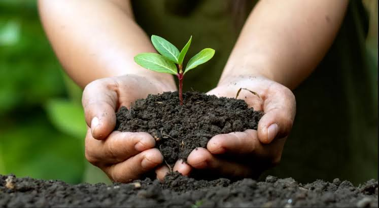
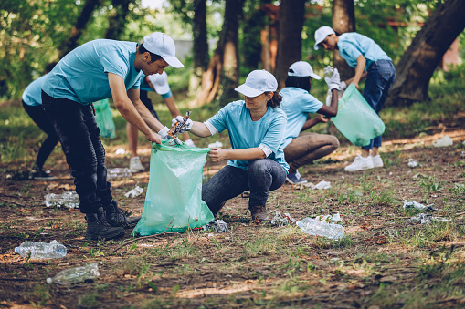
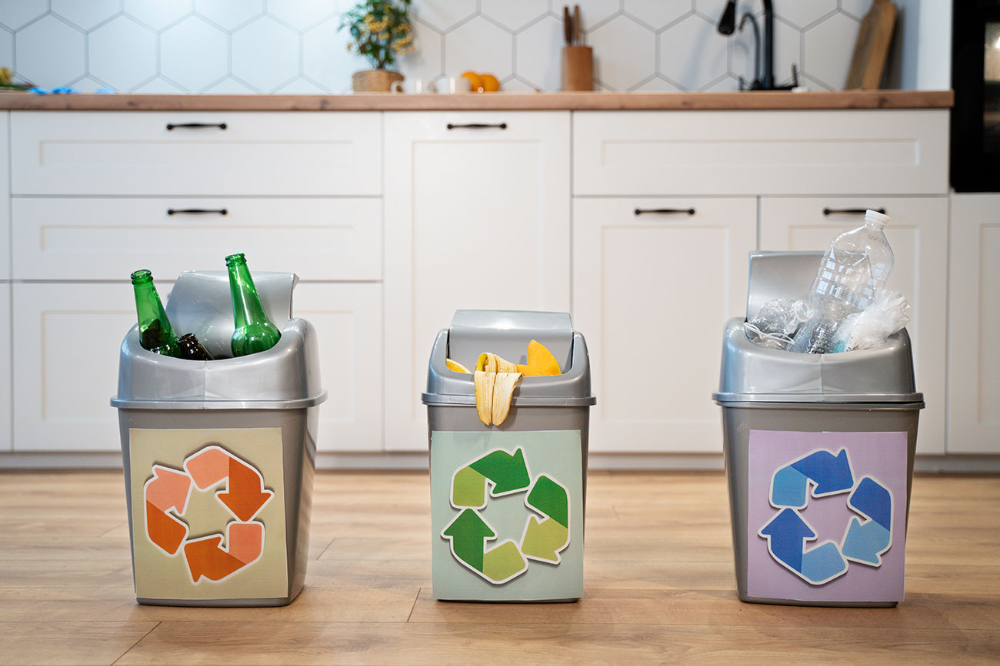

Galeri Kegiatan
Penanaman Pohon

Bersama Alam Kita Tumbuhkan Harapan.
Penanaman pohon bukan hanya tentang menanam bibit, tapi juga menanam masa depan. Melalui kegiatan ini,
EcoYouth mengajak generasi muda untuk ikut menjaga bumi dengan aksi nyata. Setiap pohon yang ditanam adalah
langkah kecil menuju udara yang lebih bersih, lingkungan yang lebih hijau, dan kehidupan yang lebih lestari.
Bebersih Lingkungan

Lingkungan Yang Bersih Menciptakan Pikiran Yang Jernih Dan Masa Depan Yang Hijau.
Lingkungan yang bersih bukan datang dengan sendirinya, ia lahir dari kepedulian dan aksi nyata.
Melalui kegiatan bersih-bersih, Eco Youth mengajak anak muda untuk turun tangan menjaga kebersihan kampus, taman, sungai, dan ruang publik lainnya.
Edukasi

Dari Tahu, Jadi Peduli Dari Peduli, Jadi Aksi.
Masalah sampah bukan hanya soal banyaknya limbah, tapi juga soal minimnya pengetahuan.
Karena itu, EcoYouth hadir memberikan edukasi yang sederhana, menyenangkan, dan aplikatif tentang
cara mengelola sampah dengan benar.